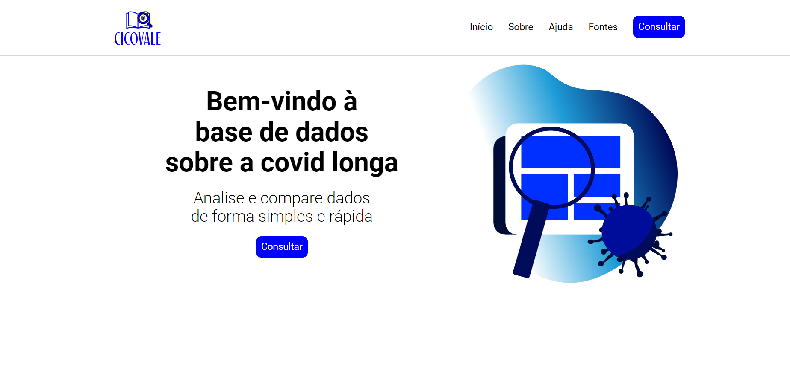

CICOVALE

Esse foi o API do primeiro semestre de DSM na FATEC. O CICOVALE (Central Informativa de COVID longa do Vale do Paraíba) é um sistema que possibilita ver e comparar dados sobre o impacto da COVID longa através de fontes públicas do Sistema Único de Saúde (SUS).